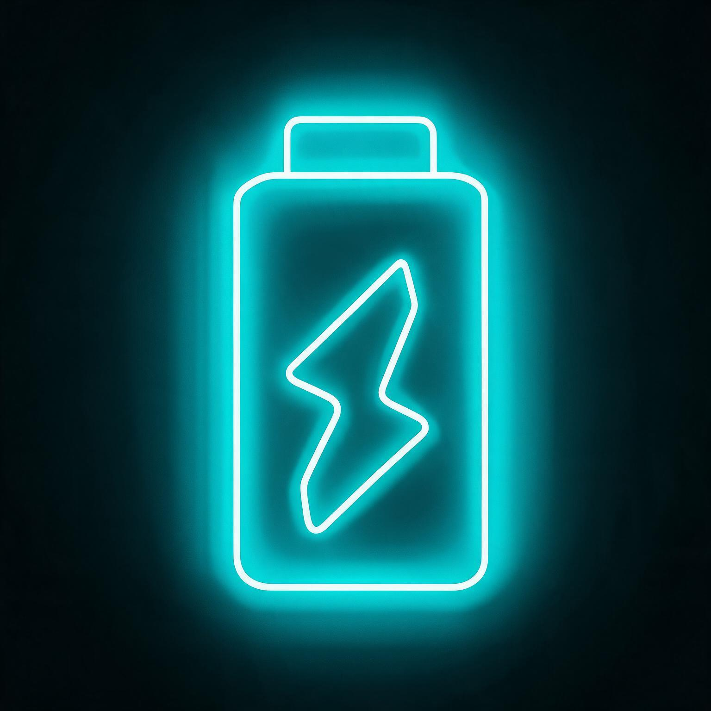

Social Battery
A Social Battery segít a Z generációnak abban, hogy az online kapcsolatokat tartalmas, valódi élményekké alakítsák, amelyek révén kapcsolódhatnak egymáshoz, jól érezhetik magukat és együtt fejlődhetnek.

A Social Battery segít a Z generációnak abban, hogy az online kapcsolatokat tartalmas, valódi élményekké alakítsák, amelyek révén kapcsolódhatnak egymáshoz, jól érezhetik magukat és együtt fejlődhetnek.